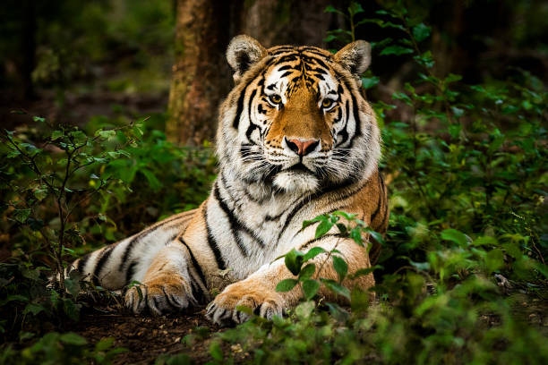

1º) Tigre

Nome Científico
Panthera tigris
Peso
Machos: 423 Kg e Fêmeas: 168 Kg
Informações
O tigre é considerado o maior felino do planeta. Trata-se de um animal carnívoro e de um excelente caçador que apresenta grande força e agilidade.